AI Agent 賦能「教與學」
新教學設計的實踐與反思
從 113 計畫的生成式 AI 協作出發，談下一步怎麼走
AI Agent 賦能「教與學」
本頁要回答：今天要分享什麼？
講解脈絡：題目 → 六段路線。
建議時間：約 1 分鐘
口語講稿摘要
各位老師好，我是電子工程系的楊榮林。謝謝教務處的邀請。今天的題目是「AI Agent 賦能教與學」，內容會從 113 年度的教學實踐研究計畫出發，場域是《數位系統設計實務》。
不教 Verilog 的老師不用擔心。可以把它想成一門學生要同時學概念、做出作品、再自己驗證的課。今天分六段：為什麼做、怎麼設計、證據說了什麼、我的反思，接著是後來發展的 PEA 與自建教具，最後才談 AI Agent。
來源
來源：行事曆紀錄（2026-11-11 16:40–17:40，建議分享約 40 分鐘）；113 成果報告封面（計畫編號、名稱、學門）。
八年持續教學實踐研究所獲
教學實踐研究計畫
（含 1 件 USR）
（兩次教學實踐、一次高教深耕）


把教學想法帶進研究，再把研究帶回課堂。
108 學年至今，每一件計畫都從課堂裡的問題出發。
八年持續教學實踐研究所獲
本頁要回答：講者是誰？113 這個計畫在哪一段路上？
講解脈絡：計畫與肯定 → 時間軸 → 113 是其中一站。
建議時間：約 1 分鐘
口語講稿摘要
先簡單介紹這段路。我從 108 學年開始，把課堂上碰到的問題拿來做教學實踐研究，累計六件計畫獲核定，含一件 USR，也有兩次沒有通過。今天講的 113，是這條路上的一站。
來源
來源：114 教學優良教師決審簡報 v3 第 01 頁與講稿；講師自述；未通過案例一、二「原始紀錄」。
先講界線：Agent 是延伸，不是 113 的成果
今天每一頁都分清楚：做過、看到、想做
把願望和成果分開講，後面的話才站得住
先講界線：Agent 是延伸，不是 113 的成果
本頁要回答：標題說 AI Agent，113 真的做了 Agent 嗎？
講解脈絡：三種標記 → 怎麼聽今天的內容。
建議時間：約 1 分鐘
口語講稿摘要
我要先講清楚一條界線。題目有 AI Agent，但 113 計畫裡學生用的是生成式 AI 對話協作，加上我自建的自動批閱。那不是 Agent，我不會把它講成 Agent。
所以今天的內容分三種：已經執行的、報告裡有資料的，還有我接下來才想試的。課堂上怎麼用 Agent 屬於第三種，到第六段才出現。我自己用 Agent 做工具的經驗，第五段會講，但那是工作經驗，不是成效研究。各位聽的時候，也可以替我檢查有沒有混在一起。
來源
來源：113 成果報告 4.1–4.3（第 6–10 頁）、6.3（第 15–16 頁）。三分類是本次分享的整理。
先講結論：三個發現
第 3 → 4 次配對比較：好消息與警訊並存
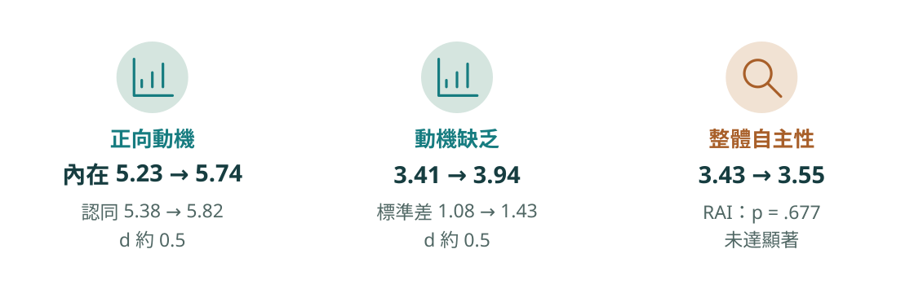
AI 不是單向的好處：同一批學生，好消息和警訊一起出現
先講結論：三個發現
本頁要回答：這個計畫最後發現什麼？
講解脈絡：三個發現 → 界線。
建議時間：約 1 分鐘
口語講稿摘要
先講結論。AI 協作專題前後，同一批學生的內在動機和認同調節都升高，效果量大約零點五。可是動機缺乏也升高了，而且分數更分散。把這些合起來算的相對自主指數，幾乎沒動。
所以我不會說「AI 提升動機」就結束。好消息和警訊一起出現，而且這是單組設計，我只能描述變化，不能直接歸因於 AI。這也是我談 Agent 時最在意的事。
來源
來源：113 成果報告 6.3 表二（第 16 頁，n = 41）。標準差 1.08 是 1.075 四捨五入。
圖解前的補充細節
第 3 次到第 4 次（AI 協作專題前後），同一批學生的配對比較 看到什麼 數字 正向動機升高 內在 5.23 → 5.74，認同 5.38 → 5.82 效果量 d 約 0.5 動機缺乏也升高 3.41 → 3.94，標準差 1.08 → 1.43 d 約 0.5；分數更分散 整體自主性沒動 相對自主指數 3.43 → 3.55 p = .677，未達顯著 界線 單組、沒有對照組：能描述變化，不能直接歸因於 AI
第 1 段／共 6 段
為什麼重新設計這門課
不是因為 AI 很新，是因為有些問題一直處理不完。
- 學生：雙低與擴大的落差
- 老師：撐不住的教學負荷
- 三個研究問題
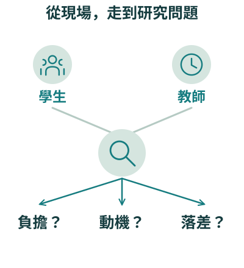
- 為什麼做
- 新教學設計
- 證據
- 反思
- PEA 與教具
- 走向 Agent
為什麼重新設計這門課
本頁要回答：這一段要談什麼？
講解脈絡：段落轉折。
建議時間：一句帶過
口語講稿摘要
第一段談動機。這個計畫不是因為 AI 很新才做。
來源
來源：113 計畫書第 7–8、16 頁；113 成果報告第 2–3 頁。
課堂現場：「雙低」成了日常
低學習動機，加上低學習成就
現場「面對大量「雙低」學生已成為私立學校教師的日常」
我的看法「主持人認為「雙低」並非學生本身的問題」
這門課同時要會邏輯思維、HDL 語法、模組設計與系統整合
先把問題寫到這一門課，後面的設計才接得上
計畫書 第 7 頁若學生在過去的學習歷程中缺乏學習動機，又沒得到適當的引導改變學習習慣，必然導致學習成就的不理想
報告 第 2 頁學生需同時掌握邏輯思維與硬體描述語言（HDL）語法，並應用於模組設計與系統整合
看點問題先寫到一門課、一種任務，不停在「少子女化」這種大背景。
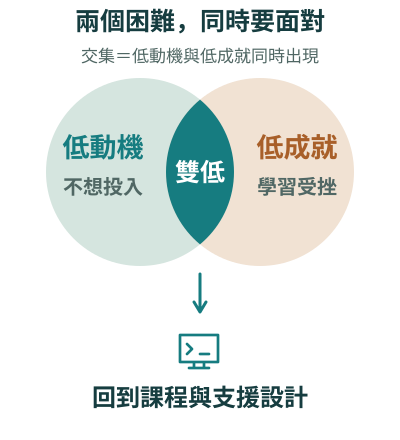
課堂現場：「雙低」成了日常
本頁要回答：這個計畫面對的是什麼課堂？
講解脈絡：兩句原文 → 落到這門課。
建議時間：約 1 分鐘
口語講稿摘要
「雙低」是低學習動機、低學習成就，在我的課堂是日常。但我不認為這是學生本身的問題：過去缺乏動機，又沒有人引導改變學習習慣，成就當然不容易好。
這門課學生要同時掌握邏輯思維、硬體描述語言的語法，還要做模組設計和系統整合。基礎或動機不夠的學生，常常一開始就卡住。
來源
來源：113 計畫書第 7 頁；113 成果報告第 2 頁（雙低、課程任務挑戰）。
平均沒有明顯變，標準差卻多了三成
109 → 111 學年：平均未顯著改變，標準差增加
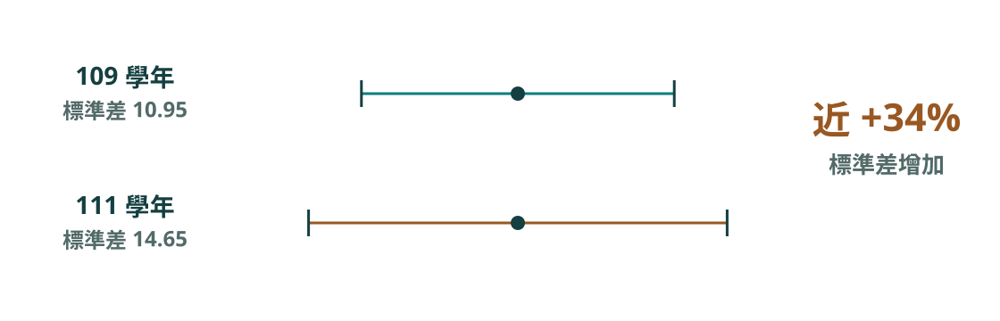
只看平均，看不到被落下的那群學生
計畫書 第 16 頁這 3 個班級的平均學期成績雖說有起伏，但未呈現出統計學上的顯著改變
計畫書 第 16 頁從 109 學年的 10.95 增加到目前 111 學年專班的 14.65
計畫書 第 16 頁這個將近 34%的增幅讓本人警覺到
計畫書 第 16 頁學習成績的標準差 14.65，我卻感到無比的擔憂
看點前期數據同時有好消息和警訊，研究問題三就是從這裡來的。
平均沒有明顯變，標準差卻多了三成
本頁要回答：為什麼把「落差」當成問題？
講解脈絡：平均 → 標準差 → 我的警覺。
建議時間：約 1 分鐘
口語講稿摘要
這是前期資料給我的警訊。109 到 111 學年，這個專班的學期成績平均沒有統計上的顯著改變，標準差卻從十點九五增加到十四點六五，將近百分之三十四。
只看平均，會以為一切還好。所以計畫不能只問動機有沒有上升，也要問落差有沒有變大。這是前期資料，班級和 113 不同，我不直接拿來比較。
來源
來源：113 計畫書第 16–17 頁（109–111 學年 NEEMEC 專班；10.95、14.65、將近 34%；內在動機 P-value=0.02）。右圖線寬依標準差比例。
圖解前的補充細節
NEEMEC 專班，109 到 111 學年的追蹤 看平均 學期成績 有起伏 統計上 未顯著改變 看標準差 109 學年 10.95 111 學年 14.65 將近 +34% 我的警覺 「我們有一群需要不同教學方法來協助的學生」
還有一個問題：老師自己也撐不住
越細緻的教學調整，越吃老師的時間
教材準備「這種教學準備的負荷，早已將本人壓得快喘不過氣」
照顧不到的學生「主持人也已經沒有多餘的心力照顧到這部分的學生了」
轉機「可以利用它來解決過去無法照顧到每一位學生的遺憾」
研究問題一來自老師的負荷，不只是學生的成績

還有一個問題：老師自己也撐不住
本頁要回答：為什麼也要問教師負擔？
講解脈絡：兩句原話 → 轉機。
建議時間：約 1 分鐘
口語講稿摘要
第二個問題在老師這邊。複習翻轉的教材得到學生肯定，可是準備的負荷把我壓得快喘不過氣。再怎麼調整，也只能以多數學生為主，有些學生放棄了，我沒有多餘的心力照顧。
2022 年底 ChatGPT 出現，我開始想，或許可以用它解決過去照顧不到每一位學生的遺憾。
來源
來源：113 計畫書第 7–8 頁。
三個研究問題
三個問題，對準三種需要蒐集的證據
一題問老師，一題問學生，一題問風險
報告 第 3 頁生成式 AI 輔助是否能有效減輕教師在教材編寫與評量設計上的工作負
報告 第 3 頁生成式 AI 協作學習是否有助於提升學生的學習動機與課程參與程度？
報告 第 3 頁生成式 AI 融入教學是否可能加劇學習落差與動機分化現象？
看點問題的方向不預設答案，第三題甚至在找反例。
三個研究問題
本頁要回答：這個計畫要回答什麼？
講解脈絡：三題依序 → 第三題是風險。
建議時間：一句帶過
口語講稿摘要
所以有三個研究問題：AI 能不能減輕老師的負擔、能不能提升學生的動機與參與，還有，會不會加劇落差與分化。第三題是在問壞處。第四段我會一題一題對回證據。
來源
來源：113 成果報告 2.1（第 3 頁）。
圖解前的補充細節
教師的負擔、學生的動機，還有 AI 可能放大的落差 一 能減輕教師負擔嗎？ 教材編寫與評量設計 二 能提升動機與參與嗎？ AI 協作學習 三 會加劇落差與分化嗎？ 個別差異與因應 注意第三題 同一個計畫裡，正面和負面的可能都要問
第 2 段／共 6 段
新教學設計：AI 怎麼進到課堂
不是加一個工具，是課程結構、教材和評量一起改。
- 申請與實際的差異
- 四階段與三條路
- 活教材、批閱與評量
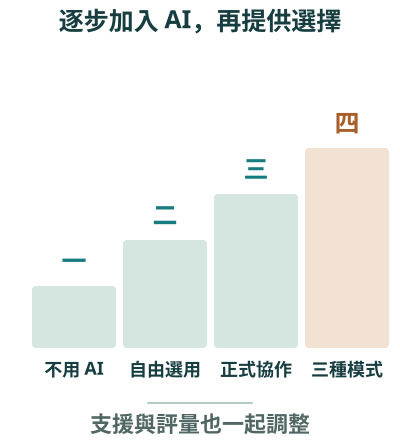
- 為什麼做
- 新教學設計
- 證據
- 反思
- PEA 與教具
- 走向 Agent
新教學設計：AI 怎麼進到課堂
本頁要回答：這一段要談什麼？
講解脈絡：段落轉折。
建議時間：一句帶過
口語講稿摘要
第二段看實際怎麼教。AI 一進來，課程、教材和評量都要跟著動。
來源
來源：113 成果報告第 6–10 頁；113 授課計畫書。
原本怎麼排，實際怎麼改
113 申請時的授課計畫，與成果報告的實際執行對照
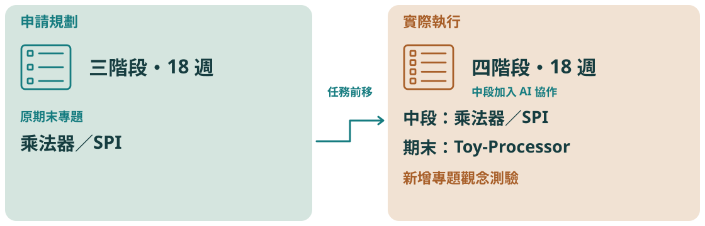
規劃會變；改了什麼、為什麼改，都要留下紀錄
原本怎麼排，實際怎麼改
本頁要回答：規劃和實際差在哪裡？
講解脈絡：左右對照 → 只講文件有寫的理由。
建議時間：約 1 分鐘
口語講稿摘要
申請時是三階段，期末安排乘法器和 SPI。實際執行變成四階段，中段加入 AI 協作，那兩個專題移到學期中，期末改做一顆簡易處理器，後來又多了補救的選項。
規劃一定會變。我的原則是：改了什麼要留下紀錄，文件沒有寫明的原因，我不替它補一個好聽的故事。
來源
來源：113 授課計畫書 PDF 第 1–3 頁；113 計畫書第 12、14–15 頁；113 成果報告第 6–10 頁。
四階段教學：AI 一步一步放進來
18 週，AI 從第二階段開始加入
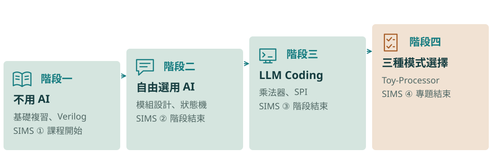
每一階段都看得出 AI 的角色，和那次動機問卷的時間點
第 7 頁此階段為生成式 AI 工具之首次導入，學生可選擇性地與 ChatGPT 等大型語言模型互動，用以請求解題提示、語法解釋或錯誤診斷
第 7 頁本階段同時為 LLM Coding 策略的正式實施期
第 13 頁指定 HDLBits 線上平台上的 71 題 Verilog 練習作為課後任務
第 12 頁課程開始之際同步實施第一次 SIMS 動機問卷施測
看點每一階段都寫出 AI 的角色和 SIMS 施測時間，後面的動機曲線才對得回教學。
四階段教學：AI 一步一步放進來
本頁要回答：AI 是怎麼一步步放進來的？
講解脈絡：四階段依序 → SIMS 時間點。
建議時間：約 1.25 分鐘
口語講稿摘要
第一階段不用 AI，先打基礎。第二階段開放學生自己決定要不要問 AI。第三階段做兩個小專題，正式用 LLM Coding，學生主導、AI 輔助。第四階段是整合專題，做法讓學生自己選。
動機量表 SIMS 也跟著階段測四次，所以後面的曲線有四個點。不過報告兩個章節對第一次的施測時間寫法不一致，實際日期我還要回原始紀錄確認。其他學科可以借的是這個想法：先有基礎，再放工具，而不是第一週就全開。
來源
來源：113 成果報告 4.1（第 6–8 頁）、6.1（第 12–14 頁）：四階段名稱、多重表徵、Zuvio、HDLBits 71 題、25 題自動批閱、Shift-and-Add 乘法器與 SPI、Toy-Processor 二十條指令與十二組測試、各次 SIMS 施測時點；成果交流會簡報第 3 頁。卡片文字是講師的濃縮。資訊圖依本頁內容整理，為概念示意。
圖解前的補充細節
《數位系統設計實務》18 週：AI 從第二階段才放進來，一步一步加重 階段一 基礎複習 Verilog 入門 AI 尚未使用 AI 多重表徵、Zuvio 即時測驗 SIMS ① 課程開始 階段二 模組化設計 有限狀態機 AI 自由選用：問提示、除錯 HDLBits 指定 71 題、批閱 25 題 SIMS ② 階段結束 階段三 可合成 RTL 兩個小專題 AI LLM Coding 正式實施 乘法器、SPI 傳輸模組 SIMS ③ 階段結束 階段四 整合專題 Toy-Processor AI 三種做法自己選 20 條指令、12 組自動測試 SIMS ④ 專題結束
Toy-Processor：同一個專題，三條路
同一個 Toy-Processor，學生自己選做法
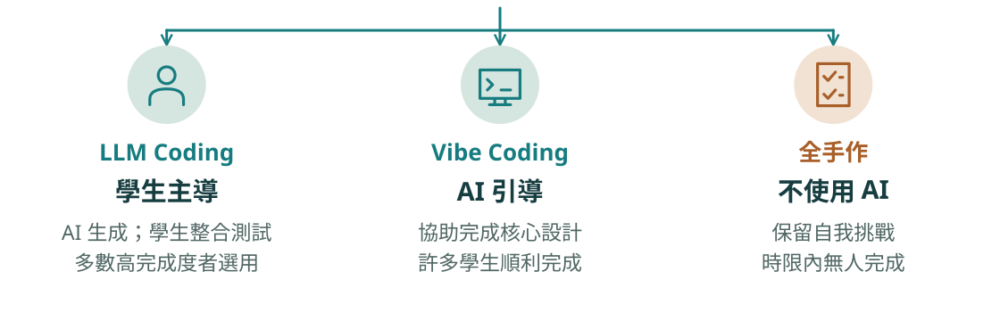
同一個題目給三條路；連「沒人做完」也照實說
第 8 頁學生可依據個人能力與策略偏好，自主選擇 LLM Coding、Vibe Coding 或全手作三種實作模式進行專題挑戰
第 13 頁多數高完成度學生採用 LLM Coding 模式
第 14 頁雖最終未有學生能在時限內成功完成全自製版本
第 9 頁執行教師於期末階段即時新增補救選項
第 10 頁此替代路徑雖非原計畫所設，卻有效提升課程包容性與學習韌性，避免學生在終點前放棄
看點三條路各有結果，連「沒人做完」也照寫；臨時加的補救測驗，也註明是原計畫沒有的。
Toy-Processor：同一個專題，三條路
本頁要回答：同一個專題，怎麼照顧不同學生？
講解脈絡：三條路 → 誰走哪條 → 補救。
建議時間：約 1.25 分鐘
口語講稿摘要
期末專題是一顆二十條指令的處理器，有十二組自動測試。學生有三條路。LLM Coding 是學生主導，請 AI 生成模組，自己整合測試，報告寫多數高完成度的學生選這條。Vibe Coding 門檻較低，在 AI 引導下完成核心設計，許多學生因此做完。全手作不用 AI，時限內沒有人做完，這點也照實寫。
還是有人做不完，所以我臨時加了第四條路：四十題專題觀念測驗，擇優計分。這不是原計畫有的。至於走 Vibe Coding 的學生學到的是否一樣，這輪資料回答不了，這個問題到了 Agent 時代只會更尖銳。
來源
來源：113 成果報告 4.1 第四階段（第 8 頁）、4.2（第 9 頁：三種模式與 Vibe 的說明）、4.3（第 9–10 頁：補救選項、40 題、擇優計分）、6.1（第 13–14 頁：LLM 多數高完成度、Vibe 許多學生完成、全手作無人完成）；成果交流會簡報第 4 頁（「未完成實作學生可選擇專題補救觀念測驗替代」）。
圖解前的補充細節
期末專題 P306 Toy-Processor：同一個題目，學生自己選做法 LLM Coding 學生主導 AI 生成模組，學生整合測試 ✓ 多數高完成度者選這條 Vibe Coding 門檻較低 AI 引導完成核心設計 ✓ 許多學生順利完成 全手作 不用 AI 保留給想自我挑戰的學生 ✕ 時限內無人做完 原計畫沒有 做不完的學生，期末加開「專題補救觀念測驗」40 題，擇優計分
「活」教材：
讓回饋帶動更新
113 更新流程｜AI 起草，教師把關

教材跟著課堂走；AI 起草，老師檢查，趕在下次上課前更新
「活」教材：讓回饋帶動更新
本頁要回答：教材怎麼跟著學生走？
講解脈絡：蒐集 → 補寫 → 上線 → 分層使用。
建議時間：約 1 分鐘
口語講稿摘要
這是老師端最有感的改變。從課堂觀察、學生提問和形成性評量知道大家卡在哪，先讓 AI 起草說明和範例，我檢查修正，趕在下次上課前補進 Notion。
這門課一學期累積超過四十筆 Live Lecture Notes。學生偏好調查裡，線上數位教材最高，77.8%，第二是 Zuvio 形成性評量 75.6%，專題只有 20%。不過偏好不是成效，專題為什麼低，報告沒有問，我也不亂猜。
來源
來源：113 計畫書第 8、15 頁；113 成果報告第 6、8、12、19 頁；115 計畫書第 3 頁（「單一學期便累積超過四十筆」）；偏好比例見 113 成果報告圖四（第 18 頁）與 6.5（第 19 頁）。
AI 能寫程式之後，評量改問什麼
AI 會寫程式，評量就不能只看交出來的程式
- 選擇題問概念統整與應用避免過度直述或單純記憶的題型
- 實作題附設計思路佐證撰寫過程，不只呈現結果
期末：兩種組合擇優計分
共同部分：選擇題 60 題
組合一＋ 專題實作
組合二＋ 補救觀念測驗 40 題
AI 會寫程式之後，評量要看得到概念和設計思路
第 9 頁形成性與總結性評量中的選擇題設計，更加聚焦於概念統整與應用能力的檢核，避免流於過度直述或單純記憶導向的題型
第 9 頁實作題則需搭配簡要設計思路說明，以佐證其程式撰寫過程與邏輯架構的掌握程度，避免僅呈現結果而缺乏設計脈絡
第 9 頁學生可於「總結性評量選擇題（60 題）＋專題實作」與「總結性評量選擇題（60 題）＋專題補救觀念測驗（40 題）」中擇優計分
看點教學導入 AI，評量也要跟著調整，而且要寫出調了什麼。

AI 能寫程式之後，評量改問什麼
本頁要回答：學生用了 AI，評量還看得到理解嗎？
講解脈絡：選擇題 → 實作題 → 期末組合。
建議時間：約 1.25 分鐘
口語講稿摘要
學生可以用 AI 寫程式之後，評量一定要跟著調整。選擇題多問概念統整和應用；實作題附上簡短的設計思路；期末是六十題選擇題，加上專題或補救測驗，擇優計分。
這是各位老師都可以問自己的問題：學生用了 AI，我的評量還看得出學生懂多少嗎？這些是做法的調整，報告還沒有分析它們本身的成效。
來源
來源：113 成果報告 4.3（第 9 頁）。配分見成果報告 4.3（第 9 頁）：平時 50%、期中 20%、期末 30%。資訊圖依本頁內容整理，為概念示意。
第 3 段／共 6 段
證據：好消息和警訊
先講能說到哪裡，再看動機、分散與學生的話。
- 單組追蹤的界線
- 動機的配對比較與分散
- 自評與學生回饋
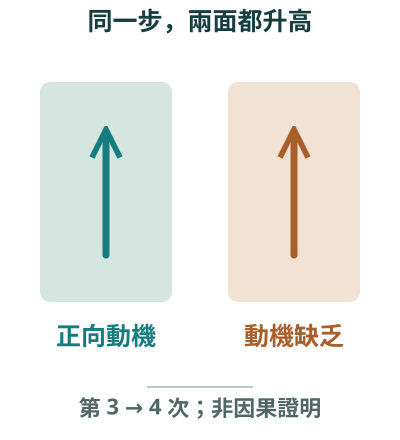
- 為什麼做
- 新教學設計
- 證據
- 反思
- PEA 與教具
- 走向 Agent
證據：好消息和警訊
本頁要回答：這一段要談什麼？
講解脈絡：段落轉折。
建議時間：一句帶過
口語講稿摘要
第三段看結果。我會把好消息和警訊放在一起。
來源
來源：113 成果報告第 10–20 頁。
為什麼選單組重複測量
自然班級的追蹤設計，有所得也有所限
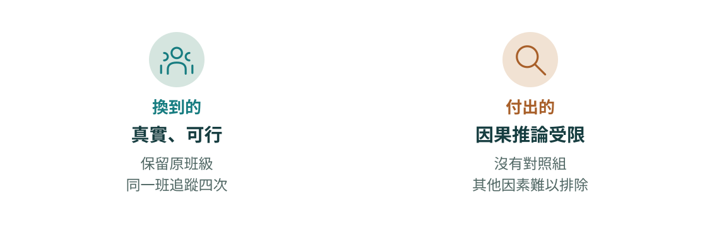
選這個設計，就要接受它的界線：能描述變化，不能直接歸因
報告 第 10 頁研究採用準實驗設計（quasi-experimental design）中之單組重複測量（one-group
報告 第 10 頁有助於在保留教學真實性的前提下
看點報告說明了為什麼選；界線則要自己交代。
為什麼選單組重複測量
本頁要回答：這份證據能說到多肯定？
講解脈絡：換到的 → 付出的。
建議時間：一句帶過
口語講稿摘要
我用單組重複測量，同一班追蹤四次。這在自然班級可行，也保留了真實性。代價是沒有對照組，變化可能來自 AI，也可能來自任務難度或學期末。所以後面每個數字，我都守住這條界線。
來源
來源：113 成果報告 5.1（第 10 頁）。「付出的」是講師的檢討。
圖解前的補充細節
「更適用於教育現場無法拆分的自然班級」 換到的 真實性 保留真實班級 可行性 同一班追蹤四次 付出的 因果 沒有對照組 解釋 其他因素難排除
統計結果：好消息和警訊都要寫
第 3 次 → 第 4 次（AI 協作專題前後），同一批學生配對比較
升高的好消息
內在動機5.23 → 5.74d = 0.55
認同調節5.38 → 5.82d = 0.53
一起升高的警訊
動機缺乏3.41 → 3.94d = 0.51
動機缺乏標準差1.08 → 1.43分散 +33%
好消息和警訊都寫：同一步，兩邊都有中等效果量
表一 四階段重複量數 ANOVA（有效樣本 39 人）
| 動機構面 | F(3, 114) | p | η²p |
|---|---|---|---|
| 內在動機 | 5.789** | .001 | .13 |
| 外在調節 | 1.201 | .313 | .03 |
| 認同調節 | 3.959** | .010 | .09 |
| 動機缺乏 | 4.476** | .005 | .11 |
| 相對自主指數 | 0.176 | .912 | .00 |
表二 第 3 次 → 第 4 次配對 t 檢定與效果量
| 動機構面 | t | p | d | 前 M (SD) | 後 M (SD) |
|---|---|---|---|---|---|
| 內在動機 | −3.52** | .001 | 0.55 | 5.232 (1.045) | 5.738 (0.992) |
| 外在調節 | −1.83 | .075 | 0.285 | 5.593 (1.012) | 5.862 (0.966) |
| 認同調節 | −3.42** | .001 | 0.533 | 5.378 (0.981) | 5.817 (1.002) |
| 動機缺乏 | −3.24** | .002 | 0.506 | 3.409 (1.075) | 3.939 (1.430) |
| 相對自主指數 | −0.42 | .677 | 0.066 | 3.431 (3.855) | 3.553 (3.755) |
**p < .01
看點同一份資料，ANOVA 看四次的整體趨勢，配對 t 檢定看關鍵的一步；效果量說明差多少。

統計結果：好消息和警訊都要寫
本頁要回答：第 3 到第 4 次發生了什麼？
講解脈絡：好消息 → 警訊 → 相對自主指數。
建議時間：約 1.75 分鐘
口語講稿摘要
這是進入 AI 協作專題前後，41 位學生的配對比較。內在動機從 5.23 升到 5.74，認同調節從 5.38 升到 5.82，效果量都在零點五左右。
可是動機缺乏也從 3.41 升到 3.94，效果量零點五一，標準差也變大。相對自主指數從 3.43 到 3.55，p 值 .677，未達顯著。不同構面可能互相抵銷，這只是一種可能的解釋，不是已驗證的機制。
如果當初只算一個總分，我會以為什麼都沒發生。這是這份資料教我最重要的一件事。
來源
來源：成果交流會簡報第 9–10 頁兩張表；113 成果報告 6.3（第 15–16 頁）與 6.4（第 17 頁：標準差 1.07 → 1.43、變異幅度 33.1%）。標準差寫 1.08 是 1.075 四捨五入，全稿統一。資訊圖依本頁內容整理，為概念示意。
分數散開的，只有動機缺乏

平均之外也看分散；分散不等於已經分成兩群
第 17 頁其標準差亦由 1.07 大幅提升至 1.43，變異幅度達 33.1%
第 17 頁變化幅度介於-5.1%至+2.1%之間
第 17 頁形成動機構面上的「贏者全拿、輸者全輸」分化效應
第 18 頁更突顯建立預警系統與提供個別化支持的重要性
看點報告用了「贏者全拿」這樣的強烈說法；但手上只有平均和標準差，還沒有個別學生的變化，這句話現在我會寫得更保守。

分數散開的，只有動機缺乏
本頁要回答：分數分散代表什麼？
講解脈絡：紅色長條 → 不等於兩群。
建議時間：約 1 分鐘
口語講稿摘要
看原圖的紅色長條，那是後測標準差。動機缺乏的標準差增加百分之三十三點一，其他構面變化小。
報告用了「贏者全拿、輸者全輸」這個說法，現在回頭看我會寫得更保守。分數更分散，不足以證明學生分成兩群，要看每個人前後怎麼變。這正是下一輪要補的。
來源
來源：113 成果報告 6.4（第 17–18 頁）與圖三（原圖未改）；表二（第 16 頁）。資訊圖依本頁內容整理，為概念示意。
自評全貌：學習興趣有三成三「不確定」
表三 本課程是否提升你的…（45 人）
有 不確定 沒有
右側百分比為「有提升」；格內數字為人數
只報「有提升」的比例，會漏掉那些說不確定的學生
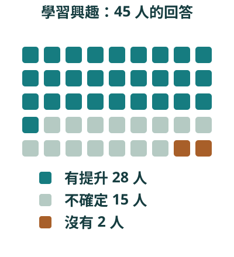
自評全貌：學習興趣有三成三「不確定」
本頁要回答：學生覺得自己提升了什麼？
講解脈絡：有提升 → 不確定。
建議時間：約 1 分鐘
口語講稿摘要
45 位學生的期末自評，問題解決能力 41 位說有提升，自主學習 36 位。可是學習興趣只有 28 位說有，15 位回答不確定。只報「有提升」的比例，就會漏掉這三成三的學生。這些都是感受，不是能力測驗。
來源
來源：113 成果報告表三（第 19 頁，已核對原表影像）。長條依人數比例。
同一個專題，兩種感受
課程難度的回饋，報告說「明顯呈現兩極分化」
基礎良好的學生「專題任務極具挑戰性，因此更激發我額外投入 HDL 練習。」
基礎薄弱的學生「每週新知識與專題壓力過大」
學生的期待提供更多中間階段的任務，緩和認知負擔與心理壓力
同一個任務，兩種感受；開放題說出了分數看不到的事
第 19 頁針對課程難度方面，學生意見明顯呈現兩極分化
第 19 頁專題任務極具挑戰性，因此更激發我額外投入 HDL 練習。
第 19 頁期望未來能提供更多中間階段的任務，以緩和其認知負擔與心理壓力
看點兩邊都放，學生的話也能接回動機缺乏的標準差。
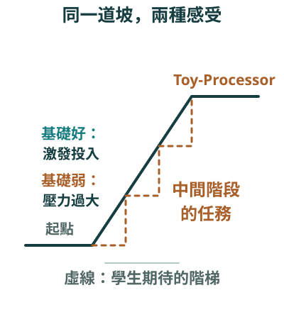
同一個專題，兩種感受
本頁要回答：同一個任務，學生怎麼感受？
講解脈絡：兩句話 → 學生的期待。
建議時間：約 1 分鐘
口語講稿摘要
基礎較好的學生說，專題很有挑戰性，反而讓自己多練。基礎較弱的學生說，每週新知識加專題，壓力太大。這是報告整理的例子，不是全班比例。學生希望多一些中間階段的任務，這是我要接住的回饋。
來源
來源：113 成果報告 6.5（第 19 頁）。資訊圖依本頁內容整理，為概念示意。
從依賴到判斷：學生自己走過的路
用 AI 的態度，做著做著變了：學生的這段話，也是成果報告的材料
- 起初
過度依賴 AI
- 後來
必須結合自身理解
與批判性思考 - 學生建議
增加對 AI 產出
錯誤案例的
討論環節
還不能說報告有自評與教學觀察，但沒有直接測量「判斷 AI」的能力
學生自己提了下一步：多討論 AI 寫錯的例子
第 19 頁部分學生反映起初過度依賴 AI，後期則發現必須結合自身理解與批判性思考，才能真正掌握課程內容與實作技巧
第 19 頁AI 產出的程式並非完全可靠，若缺乏判斷與驗證能力，有時反而會帶來更多錯誤。
第 19 頁希望未來課程能增加對 AI 產出錯誤案例的討論環節，提升我們獨立判斷與修正錯誤的能力。
看點學生的建議很具體，可以直接變成下一輪的課堂活動；但這一輪還沒做，不能寫成成果。

從依賴到判斷：學生自己走過的路
本頁要回答：學生怎麼看待自己用 AI？
講解脈絡：起初 → 後來 → 學生建議。
建議時間：約 1 分鐘
口語講稿摘要
部分學生說，一開始很依賴 AI，後來才發現要有自己的理解和判斷，才真的學得會。有學生給我很具體的建議：多討論 AI 寫錯的例子。
不過這是部分學生的自述，報告也沒有直接測量判斷 AI 的能力。我還不能說判斷力提升了。這句話也是我後面談 Agent 的起點。
來源
來源：113 成果報告 6.5（第 19 頁）。三張卡引自同段文字；先後依報告敘述，不代表全班的發展歷程。右圖活動是講師依學生建議提出的想法，報告未列為已實施項目。相關線索：問題解決能力自評 91.1%（第 19 頁）、完成 RTL 設計者在錯誤診斷等方面的進步（第 13 頁，教學觀察，未列數據）。資訊圖依本頁內容整理，為概念示意。
第 4 段／共 6 段
反思：三個問題答到哪裡
有的證據多，有的還不夠，我自己的報告也有要改的句子。
- 回到三個研究問題
- 如果重寫報告
- 下一輪要改的事
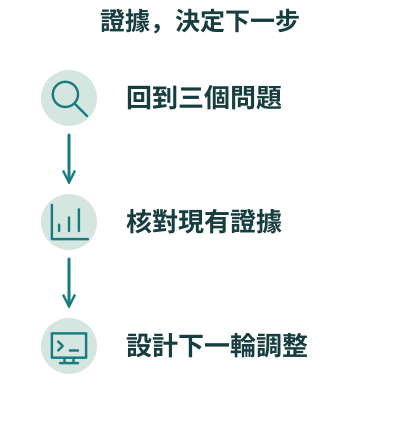
- 為什麼做
- 新教學設計
- 證據
- 反思
- PEA 與教具
- 走向 Agent
反思：三個問題答到哪裡
本頁要回答：這一段要談什麼？
講解脈絡：段落轉折。
建議時間：一句帶過
口語講稿摘要
第四段回到研究問題，也談我自己想改的話。
來源
來源：113 成果報告第 17–20 頁。
回到三個研究問題：證據走到哪裡
三個研究問題，逐一對回證據與缺口
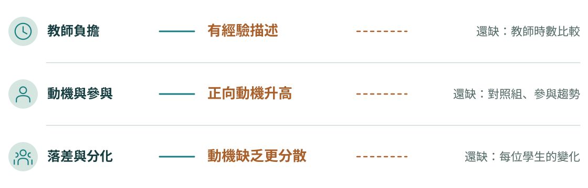
每個研究問題都對回證據：有的多，有的還不夠
第 3 頁研究將透過教學負擔量化分析與教師主觀感受調查
第 8 頁更顯著減輕教師在教材設計、學習診斷與作業批改等面向的工作負擔
第 17 頁從本課程的數據觀察可得出肯定結論
第 17 頁內在動機從前測平均值 5.23 顯著提升至後測 5.74
第 17 頁其標準差亦由 1.07 大幅提升至 1.43
第 18 頁此結果回應了研究問題二與三的核心關注
看點第 3 頁說會做教學負擔量化分析，後面卻沒有列出數據。承諾過的分析要回頭檢查。
回到三個研究問題：證據走到哪裡
本頁要回答：三個研究問題答到什麼程度？
講解脈絡：三題 → 有什麼 → 還缺什麼。
建議時間：約 1.5 分鐘
口語講稿摘要
第一題，老師的負擔有沒有減輕？我有經驗描述，但沒有列時數，這是最大的缺口。第二題，動機與參與？正向動機升高，但沒有對照組，不能直接歸因於 AI。第三題，落差有沒有加劇？能說分數更分散，還不能說分成兩群。
橋板的多寡是我對證據的自評，不是統計指標。各位如果也做研究，這張對照值得申請時就做一次，結案時再檢查。
來源
來源：113 成果報告 2.1（第 3 頁）、4.1（第 8 頁）、6.3–6.4（第 15–18 頁）。數字見第 17 頁；d 值見第 16 頁表二。「能說到哪」「還缺」與橋板多寡是講師的檢討，不是報告原文。資訊圖為概念示意。
圖解前的補充細節
結案前最值得做的一件事：每個問題，對回手上的證據 研究問題 手上有 能說到哪 還缺 一 AI 能減輕 教師負擔嗎？ 文字描述 教材、診斷、批改都寫有減輕 我的經驗：有減輕 時數等量化比較 二 AI 協作能提升 動機與參與嗎？ 內在 5.23 → 5.74 認同 5.38 → 5.82；d 約 0.5 升高了，不能直接歸因 對照組、參與趨勢 三 AI 會加劇 落差與分化嗎？ 動機缺乏 3.41 → 3.94 標準差 1.08 → 1.43 有跡象，是否兩群未知 每位學生的變化 右圖橋板多寡是我自己的評估，不是統計指標；虛線是下一輪要補的
如果重寫報告，我會改這幾句
績優報告也有可以寫得更保守的地方
報告原句現在我會寫
「穩定上升」
整體上升，第 3 次有低點內在動機曲線
「贏者全拿、輸者全輸」
分數更分散，是否兩群待查只有平均與標準差
「證實 AI 協作學習能有效激發」
前後有差異，不能直接歸因沒有對照組
「已充分證實」
有觀察，尚無比較數據分層策略的效果
寫結論時，要讓每個動詞都配得上手上的證據
報告 第 14 頁內在動機（Intrinsic Motivation）均值從第一階段的 5.25 穩定上升至第四階段的 5.69
報告 第 17 頁形成動機構面上的「贏者全拿、
報告 第 16 頁證實 AI 協作學習能有效激發學生的自主性動機
報告 第 10 頁已充分證實其為生成式 AI 教學模式成功實踐與適性化落地之關鍵基礎
看點原句都在這裡，請一起檢視。
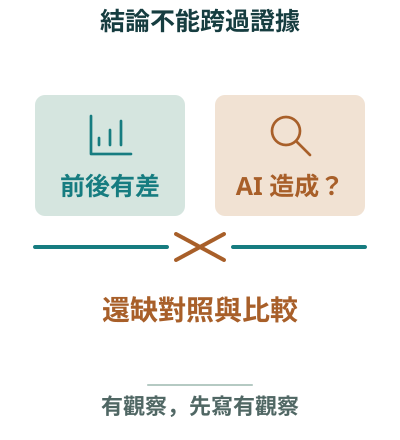
如果重寫報告，我會改這幾句
本頁要回答：績優報告也有要修的地方嗎？
講解脈絡：報告原句 → 現在的寫法。
建議時間：約 1.25 分鐘
口語講稿摘要
這一頁有點不好意思，但我覺得最值得分享。這是我自己的報告。內在動機寫「穩定上升」，曲線其實第三次有低點。「贏者全拿、輸者全輸」很有畫面，可是手上只有平均和標準差。「證實 AI 協作學習能有效激發」，單組設計其實證實不了。
做得到的結論，值得用準確的動詞來寫。談 AI 的成效時，尤其如此。
來源
來源：113 成果報告第 10、14、16、17 頁原句。右欄是講師現在的修正寫法。
反思：下一輪要改的三件事
下一輪的調整，每一項都接回這一輪的結果
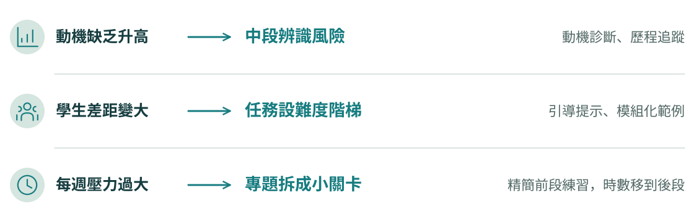
反思要接回結果；下一份計畫的動機，也從這裡開始
第 18 頁建議於課程中段導入動機診斷與學習歷程追蹤機制，以辨識具潛在風險的學生
第 18 頁進一步發展具明確難度階梯的任務設計，結合引導式提示詞、模組化範例與 AI 操作支援
第 18 頁建議適度精簡第二階段重複性練習題數，將教學時數重分配至第三與第四階段，並將 Toy-Processor 專題任務模組化
第 20 頁課堂中需建立明確的AI 使用規範與倫理守則，透過過程評量方法，如檢視學生的思考歷程與 AI 互動紀錄
看點每一項調整都接得回一個結果；下一份計畫書的動機，就從這裡開始。
反思：下一輪要改的三件事
本頁要回答：下一輪要怎麼改？
講解脈絡：結果 → 調整 → 落在學期哪裡。
建議時間：約 1.25 分鐘
口語講稿摘要
報告提了三個調整方向，都接回結果。動機缺乏升高，所以學期中段就做動機診斷。學生差距變大，所以任務做成難度階梯。每週壓力太大，所以精簡前段練習，把專題拆成小關卡。
這些是想做的事，不是已證明有效的成果。各位可能注意到，它們都需要老師花更多時間看資料、做調整。老師的時間和資料從哪裡來？接下來就看我後來怎麼做。
來源
來源：113 成果報告 6.4（第 18 頁：三項精緻化調整）、7（第 20 頁：AI 使用規範與過程評量）。左欄「看到的結果」是講師把調整對回 6.3–6.5 結果的歸納。資訊圖為概念示意。
圖解前的補充細節
每項調整都接回一個結果；這些是下一輪想做的，還不是成果 看到的結果 下一輪調整 動機缺乏升高 課程中段，先找出風險學生 動機診斷、學習歷程追蹤 學生差距變大 任務做成難度階梯 引導式提示詞、模組化範例 每週壓力過大 專題拆成小關卡 精簡第二階段練習，時數移到後段 使用 AI 訂出使用規範，看學生的思考歷程與 AI 互動紀錄
第 5 段／共 6 段
PEA 與自建教具：把調整變成每週的事
113 之後的做法。場域換了，不是 113 計畫的結果。
- PEA 每週循環
- 六套自建工具
- 再量一次動機
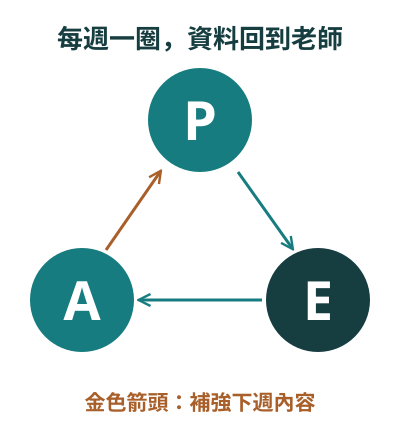
- 為什麼做
- 新教學設計
- 證據
- 反思
- PEA 與教具
- 走向 Agent
PEA 與自建教具：把調整變成每週的事
本頁要回答：這一段要談什麼？
講解脈絡：段落轉折。
建議時間：一句帶過
口語講稿摘要
第五段看 113 之後我怎麼做。要先說明，這是另一門課、另一批學生。
來源
來源：114 教學優良教師決審簡報 v3 第 04、05 頁；115 計畫書。
PEA：預習、參與、評估，每週走一圈
三個環節都留下資料，老師才看得到下週要補什麼
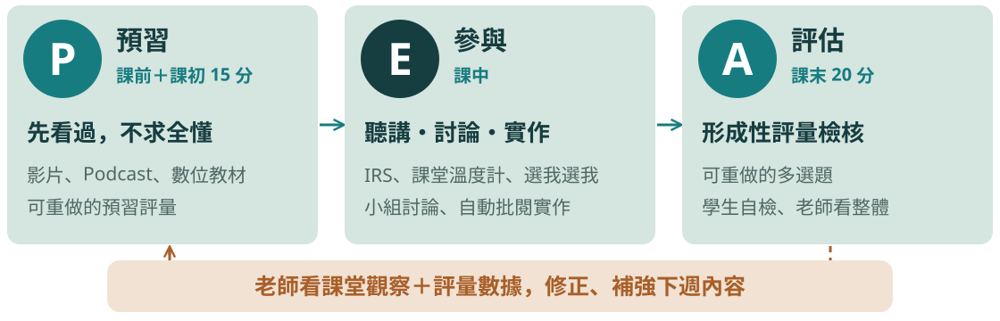
預習只求看過、評量可以重做：先讓學生跟得上，再要求想得深
115 計畫書 PDF 第 7 頁PEA 並非坊間既有架構的延伸
115 計畫書 PDF 第 7 頁形成一個具有回饋循環的學習流程
看點框架是從工程課程現場需求長出來的，115 計畫才開始系統化檢驗。
PEA：預習、參與、評估，每週走一圈
本頁要回答：PEA 是什麼？
講解脈絡：P → E → A → 回到下週。
建議時間：約 1.25 分鐘
口語講稿摘要
AI 出現後，我重新檢視原本的複習翻轉，整理成 PEA：Preview、Engage、Assess。預習是上課前三到五天給影片、Podcast 或教材，只求看過；我不能假設大家都預習，所以課堂前 15 分鐘有一份簡單、可以重做的預習評量。
參與是聽講、討論和實作，搭配自己設計的 IRS。評估放在課末，用比較嚴謹的多選題，也可以重新作答，學生為了更高分會再想一次。每個環節都數位化，我就能拿實際資料決定下週要補什麼。第四段說要在學期中段就辨識風險，這就是我的回應。AI 在這裡負責協助產生個人化教材與試題。
來源
來源：114 教學優良教師決審簡報 v3 第 04 頁與九頁精簡版講稿；115 計畫書 PDF 第 7 頁。與第四段的連結是本次分享的整理。
六套自建工具：讓 PEA 每週轉得動
對應 P、E、A 三環，加上給老師看的動機分析；數字取自系統後台
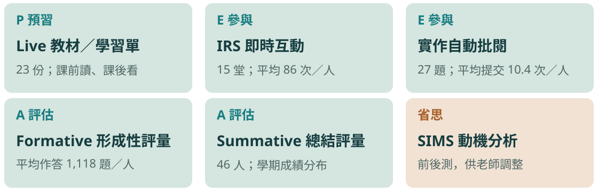
老師提需求、定邏輯、驗結果、做決定；Agent 協助把工具整合起來
六套自建工具：讓 PEA 每週轉得動
本頁要回答：這些工具是什麼？怎麼做出來的？
講解脈絡：六張卡 → 使用量 → 老師與 Agent 的分工。
建議時間：約 1 分鐘
口語講稿摘要
要做到每週一圈，早期我得搭 Zuvio、學校的 Flip Class、Firebase，很難掌握整體。後來我重建成六套自己的工具：教材、IRS、課堂實作自動批閱、形成性評量、總結評量，還有 SIMS 分析。113 的 Verilog 自動批閱，就是這條路的前身，當時 62.2% 的學生把它選為喜愛的方法。
請看數字：平均每人作答一千一百多題、IRS 互動八十六次。這只是使用量。114 下學期，我用 AI Agent 協助整合這些工具，但我的角色沒有交出去：提出需求、設計教學邏輯、驗證結果、做最後決定。學生說哪裡不順，就回頭修。
來源
來源：114 教學優良教師決審簡報 v3 第 05 頁與講稿；114 自我陳述（AI Agent 協助整合工具、教師的四個角色）；113 成果報告 6.5（第 19 頁：62.2%）。
再量一次 SIMS：這一輪動機缺乏沒有升高
同一把尺、不同課程：只能各自解讀，不能拿來和 113 比
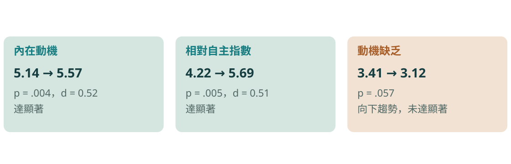
方向令人鼓舞，但還不能說是 PEA 或工具造成的；這正是 115 要檢驗的
再量一次 SIMS：這一輪動機缺乏沒有升高
本頁要回答：換了做法之後，學生的動機怎麼樣？
講解脈絡：三個數字 → 為什麼不能比較。
建議時間：約 1 分鐘
口語講稿摘要
114 下學期這兩班，第一週和期末都測 SIMS，配對後 35 人。內在動機從 5.14 到 5.57，相對自主指數從 4.22 到 5.69，都達顯著，效果量約零點五。113 讓我擔心的動機缺乏，這次是 3.41 到 3.12，向下但未達顯著，p 值 .057。
我很想說問題解決了，但不能。課程不同、學生不同、間隔也不同，113 是第三到第四次，這裡是期初到期末，又沒有對照組。所以我只說方向令人鼓舞。115 計畫正在《APP 程式設計實務》檢驗 PEA，還沒有結果。接下來就談 Agent 本身。
來源
來源：114 教學優良教師決審簡報 v3 第 05 頁（SIMS 前後測，Cronbach’s α .75–.93）；115 計畫書封面與第 7 頁。
第 6 段／共 6 段
走向 AI Agent：誰做決定
從這裡開始是工作經驗與延伸構想，不是研究結果。
- Agent 和聊天差在哪
- 老師端與學生端
- 護欄與小範圍試用
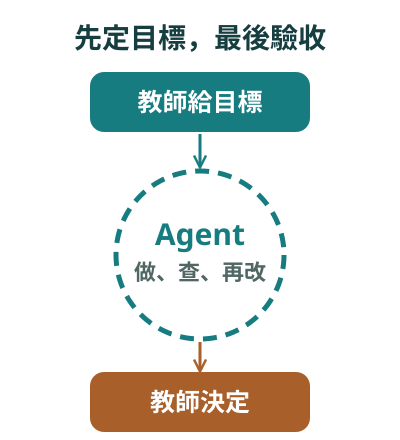
- 為什麼做
- 新教學設計
- 證據
- 反思
- PEA 與教具
- 走向 Agent
走向 AI Agent：誰做決定
本頁要回答：這一段要談什麼？
講解脈絡：段落轉折。
建議時間：一句帶過
口語講稿摘要
最後一段談 Agent。再提醒一次，從這裡開始不是研究結果。
來源
來源：本次分享的延伸構想；相關來源見本段各頁。
Agent 和聊天差在哪：它會動手，也會回頭檢查
老師的工作，從逐句提問，移到定目標和驗收
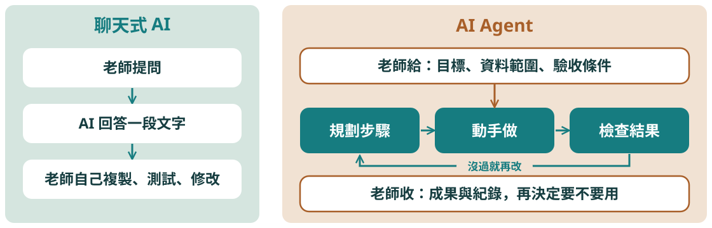
差別不只是更聰明，是老師交出去的工作變大了，驗收也要跟著變嚴
114 申請書 PDF 第 3 頁這些代理能自主決策，根據使用者需求執行多步驟任務
看點這是我當年申請書裡的描述，也是本場工作定義的起點。
Agent 和聊天差在哪：它會動手，也會回頭檢查
本頁要回答：AI Agent 到底是什麼？
講解脈絡：左：聊天 → 右：目標、循環、驗收。
建議時間：約 1.5 分鐘
口語講稿摘要
對不寫程式的老師，我會這樣說。聊天式 AI 是你問它答，答完你自己複製、測試、修改。AI Agent 是給它一個目標，它會規劃步驟、開檔案、寫程式、跑工具，看結果不對再回頭改。我現在用 Codex、Claude Code 這類工具協助備課和研究前的整理，就是這樣用。
所以老師的工作變了：從一句一句問，變成先講清楚目標、資料範圍和驗收條件，最後看成果和紀錄，再決定要不要用。這也是風險所在：一次交出去的事情越多，沒驗收時出錯的範圍就越大。
來源
來源：114 教學實踐申請書（PEE1141966）PDF 第 3 頁對 AI Agents 的描述；講者的備課經驗。圖為本場工作定義，概念示意。
我自己的判斷也在變：從「還未準備好」到開工作坊
這段路是分享經驗的累積，不是一條被驗證的成效曲線
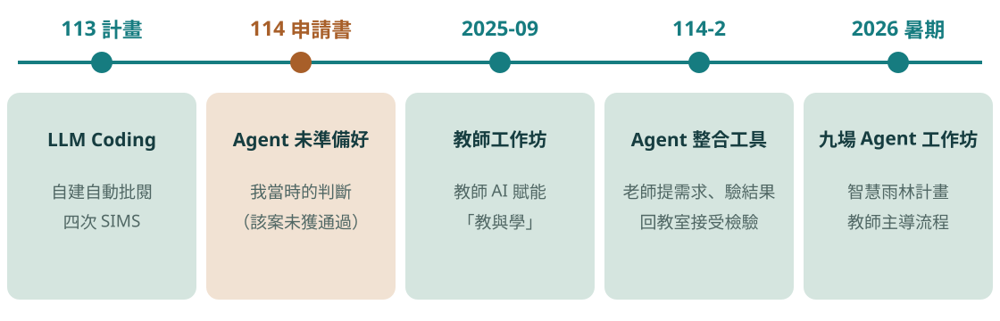
工具變得很快；教師主導的流程，比工具名稱留得久
114 申請書 PDF 第 11 頁儘管自主 AI 代理還未準備好進入教育現場
114 申請書 PDF 第 11 頁教師在引導這些技術進入教學的同時，需保持批判性思維
看點判斷會過期，後一句沒有。
我自己的判斷也在變：從「還未準備好」到開工作坊
本頁要回答：為什麼現在才談 Agent？
講解脈絡：五個節點 → 114 申請書那一句。
建議時間：約 1 分鐘
口語講稿摘要
請看中間金色那一格。我在 114 年度的申請書裡寫過：自主 AI 代理還未準備好進入教育現場。那案子後來沒有通過，但這句話我留著，提醒自己判斷會過期。到了 114 下學期，我自己就用 Agent 整合了剛才那些工具。
今年暑假，教育部智慧雨林計畫辦公室邀我主講三階段九場的 AI Agent 教學應用工作坊，超過兩百人次的老師參與。從環境建置，到歷屆題目整理、自動產生測驗網頁，再到課堂形成性評量。我分享的重點不是工具，是教師主導的流程。
來源
來源：114 申請書（PEE1141966）PDF 第 11 頁。工作坊與場次：114 教學優良教師決審簡報 v3 第 08、09 頁；人次見同簡報講稿。114-2 工具整合：114 教學優良教師自我陳述。
教師端：把負荷交出去，把判斷留下來
對應 113 的三種負荷；右欄是不能交出去的部分
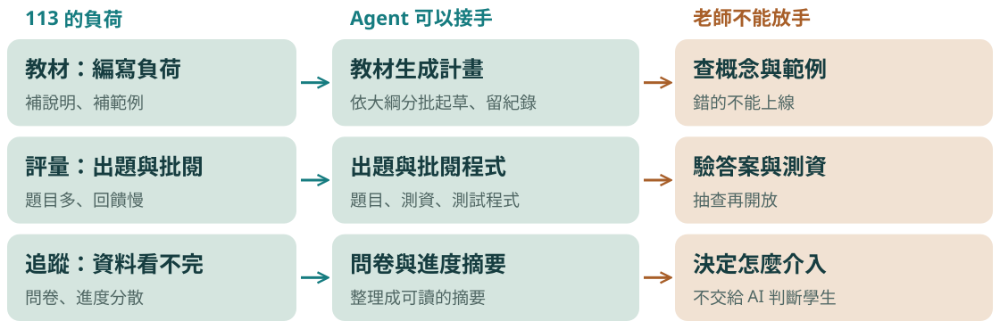
研究問題一還沒答完：要先記工時，才能說 Agent 真的減輕負擔
教師端：把負荷交出去，把判斷留下來
本頁要回答：Agent 可以幫老師做什麼？
講解脈絡：三種負荷 → 可接手 → 不能放手。
建議時間：約 1.5 分鐘
口語講稿摘要
回到我喘不過氣的那三件事。教材：可以先訂教材生成計畫，讓 Agent 依大綱分批起草，留下紀錄。評量：整理歷屆題目、動態出題、做測驗網頁和批閱工具。追蹤：把問卷和進度整理成讀得懂的摘要。剛才那六套工具，就是我實際這樣整合的。
請看右欄。概念對不對、答案和測資對不對、要怎麼介入學生，這些我沒有交出去。原案就寫過，AI 產生題目很快，真正花時間的是驗證。所以我現在只能說工作被重新分配了，省多少時間還要記錄才知道。
來源
來源：114 教學優良教師決審簡報 v3 第 09 頁（教材生成計畫、動態出題、自建批閱與進度工具；問卷工作簿分析、歷屆題目整理、自動產生測驗網頁）；115 計畫書第 4 頁（SIMS 自動化分析工具，以 Python 為核心）；113 計畫書第 13–14 頁（確認與驗證最耗時）。
一個流程：Agent 提建議，老師做決定
先把「誰決定」畫出來，再談自動化
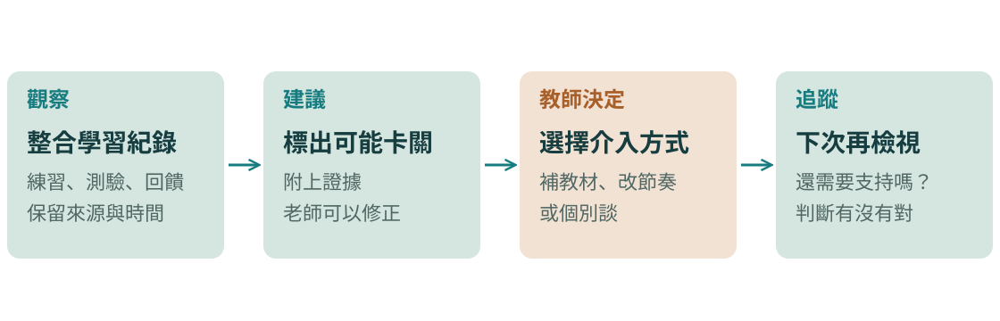
113 的補救選項到期末才開；這個流程想解決的是「看見得太晚」
一個流程：Agent 提建議，老師做決定
本頁要回答：Agent 怎麼幫老師更早看見學生？
講解脈絡：觀察 → 建議 → 教師決定 → 追蹤。
建議時間：約 1 分鐘
口語講稿摘要
113 給我的教訓是動手太晚，補救選項到期末才開。如果能在學期中段就整合練習、測驗和回饋，由 Agent 標出可能卡關的學生，附上證據，再由老師決定要補教材、改節奏，還是個別談，下一次再看有沒有用。
金色那一格是關鍵。Agent 不直接對學生做決定，老師也要能看到來源、改掉它的判斷。這是我提出的構想，還沒有驗證。
來源
來源：補救選項：113 成果報告 4.3（第 9–10 頁）；中段辨識：6.4（第 18 頁）；延伸自第 7 章（第 20 頁）。流程為本次分享構想。
學生端：手上也有 Agent，要看得到誰在思考
Vibe Coding 留下的問題，到了 Agent 時代更尖銳
「作品完成」不再等於「學生懂了」；完成之後，還要能解釋和修正
學生端：手上也有 Agent，要看得到誰在思考
本頁要回答：學生也用 Agent 時，教學要改什麼？
講解脈絡：三種做法 → 成熟度不同。
建議時間：約 1.5 分鐘
口語講稿摘要
學生也拿得到這些工具。一句目標就能交出能動的成品，「作品完成」就不再代表「學生懂了」。這比 113 的 Vibe Coding 更進一步。
我想試三件事。第一，先開放 AI 理解題目，再斷網做變化題。第二，學生自己建議的，拿 AI 寫錯的東西來練：找錯、驗證、修正。第三，評量看思考歷程和 AI 互動紀錄，不只看成品。三個的成熟度不一樣，也都還沒有成效資料。各位的學科也許成品是報告或設計，道理相同。
來源
來源：114 教學優良教師決審簡報 v3 第 09 頁（「先開放 AI 理解題目，再斷網做變化題」）；113 成果報告 6.5（第 19 頁：錯誤案例建議）、7（第 20 頁：思考歷程與 AI 互動紀錄）。
護欄：工具越能動手，這三件事越要先講好
資料、驗證、揭露，開始用之前就要決定
Agent 能讀整個資料夾，所以「放了什麼進去」就是第一道防線
115 徵件說明 PDF 第 9 頁計畫主持人應在徵件計畫書中清楚說明
看點規定寫的是計畫書；課堂使用怎麼揭露，要再看校內規範。
護欄：工具越能動手，這三件事越要先講好
本頁要回答：開始用之前要注意什麼？
講解脈絡：資料 → 驗證 → 揭露。
建議時間：約 1 分鐘
口語講稿摘要
Agent 能讀整個資料夾，這是它好用的地方，也是風險。第一，學生資料先去識別；資料放在本機，不等於離線，用雲端模型時仍可能送到遠端。第二，事先寫好驗收條件，測資、對答案、抽查，責任還是老師的。第三，用了要說。寫計畫書的老師請看徵件說明的要求，要說明 AI 的使用目的、方式與範圍。
來源
來源：115 徵件說明 PDF 第 9 頁（透明與揭露、負責與誠信）；講者的備課經驗。「資料」「驗證」兩項是講師建議。
怎麼開始：一個單元，順便補上證據缺口
一個單元、一種卡關訊號、一個教學回應
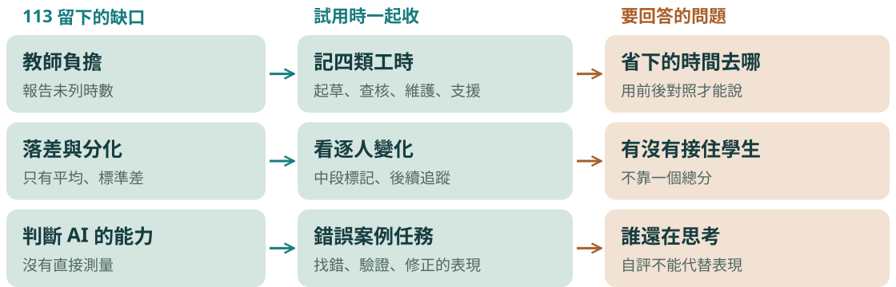
別從全課程自動化開始；先選一個單元，也先想好要收什麼資料
怎麼開始：一個單元，順便補上證據缺口
本頁要回答：如果想試，第一步是什麼？
講解脈絡：三個缺口 → 收什麼 → 回答什麼。
建議時間：約 1 分鐘
口語講稿摘要
我不建議從全課程自動化開始。選一個單元、一種卡關訊號、一個可確認的教學回應就好。而且順便把 113 留下的缺口補上：把備課拆成起草、查核、維護、學生支援四類記時間；看每位學生前後的變化，不只看平均；用錯誤案例任務，直接看學生判斷的表現。
這樣就算 Agent 沒有想像中有用，我們也會知道為什麼。
來源
來源：113 成果報告 2.1（第 3 頁）、5.2（第 11 頁）、6.4（第 17–18 頁）；缺口整理見本稿第四段。試用設計為本次分享的延伸建議。
人機共學的底線：學習的主體還是學生
人機共學的三個原則
能不能用 AI 已經不是問題；問題是誰還在思考
報告 第 20 頁必須堅守人為主體的學習倫理
報告 第 20 頁鼓勵學生主動審視與檢驗 AI 產出的內容
報告 第 20 頁課程中應積極建構人機共學文化
看點原則寫清楚，也要說明它是目標。
人機共學的底線：學習的主體還是學生
本頁要回答：不管工具怎麼變，什麼不能變？
講解脈絡：三個原則 → 自覺。
建議時間：約 1 分鐘
口語講稿摘要
報告最後我寫了三個原則：人是學習的主體、培養學生審視和驗證 AI 的素養、建立人機共學的文化。當時想的是生成式 AI，換成 Agent，我覺得更重要。這是教學目標，不是研究結果。
來源
來源：113 成果報告 7（第 20 頁）。三個標題是講師的濃縮。
圖解前的補充細節
報告最後強調的三個原則 人為主體 學習倫理 劃分 AI 與人的角色界限 批判素養 審視與檢驗 主動檢查 AI 的產出 共學文化 協作式任務 善用 AI，而非依賴解答 目標 「逐步發展出善用 AI 輔助而非依賴 AI 解答的自覺」
如果你也想試：四個我會帶走的做法
四個可以帶回自己課堂的做法
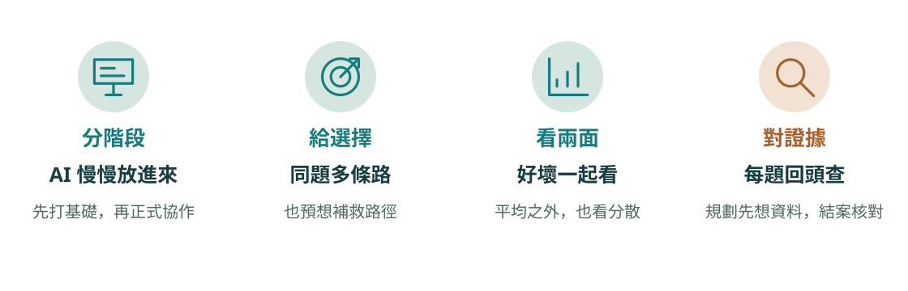
不用完全照做；從你的課最痛的那一個地方開始
如果你也想試：四個我會帶走的做法
本頁要回答：可以帶走什麼？
講解脈絡：四個做法 → 從最痛的地方開始。
建議時間：約 1.25 分鐘
口語講稿摘要
最後四件事。分階段，AI 慢慢放進來。給選擇，同一題多條路，連補救的路都先想好。看兩面，好消息和警訊一起看，也看分散。對證據，每個問題都回頭查。
請想一門自己的課：學生最常在哪一步停下來？用什麼資料看得見？下次上課前，你會補什麼、或減少什麼？不必先找最強的工具。AI 提供支援的可能，教學設計決定學生怎麼參與，評量幫我們看見差異。謝謝各位。
來源
來源：講師依本稿內容歸納。
圖解前的補充細節
這些是我的歸納，請依自己的課調整 分階段 AI 慢慢放進來 先打好基礎，再正式協作 給選擇 同題多條路 連補救的路也先想好 看兩面 好壞一起看 拆開構面，平均之外看分散 對證據 每題回頭查 規劃時先想資料，結案再核對
主要參考文獻
113 報告的主要文獻；完整 25 筆見成果報告第 21–22 頁
- Guay, F., Vallerand, R. J., & Blanchard, C. (2000). The Situational Motivation Scale (SIMS). Motivation and Emotion, 24(3), 175–213.
- Ryan, R. M., & Deci, E. L. (2000). Self-determination theory. American Psychologist, 55(1), 68–78.
- Ezzaim, A., et al. (2023). AI-based adaptive learning. J. of Universal Computer Science, 29(10), 1161–1198.
- Balid, W., & Abdulwahed, M. (2013). A novel FPGA educational paradigm. IEEE EDUCON, 23–31.
- Trost, A., et al. (2023). SHDL. Electronics, 12(2), 425.
- Sajja, R., et al. (2025). Evaluating AI-powered learning assistants. arXiv:2506.05699.
- Kaplan-Rakowski, R., et al. (2023). Generative AI and teachers’ perspectives. J. of Interactive Learning Research, 34(2), 313–338.
- Zhai, X. (2024). Transforming teachers’ roles and agencies. arXiv:2410.03018.
完整書目與計畫內容，請見成果報告
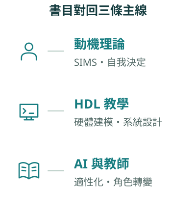
主要參考文獻
本頁要回答：想進一步閱讀可以看什麼？
講解脈絡：備用頁。
建議時間：不計時
口語講稿摘要
這一頁留給想進一步閱讀的老師，不逐筆念。
來源
來源：113 成果報告參考文獻（第 21–22 頁）；書目依報告列示，已略寫。
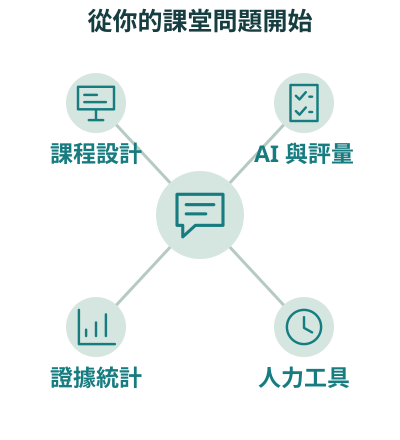
謝謝聆聽
謝謝各位老師
接下來是 Q&A，歡迎用自己的一門課來討論。可以從這幾個開始：
課程設計
AI 什麼時候放進課堂？分層怎麼排？
AI 與評量
學生用了 AI，怎麼評得到理解？
證據與統計
動機資料怎麼收、怎麼解讀？
AI Agent
第一步可以交給它什麼？誰來驗收？
課堂問題 → 新教學設計 → 動機證據 → 反思 → 老師主導的 Agent 流程
謝謝各位老師
本頁要回答：大家還想討論什麼？
講解脈絡：收尾與提問方向。
建議時間：約 20 分鐘
口語講稿摘要
今天的分享就到這裡。歡迎用自己的一門課來討論：AI 什麼時候放進課堂、學生用了 AI 怎麼評得到理解、Agent 第一步可以交給它什麼，或是動機資料怎麼收、怎麼解讀。
來源
來源：討論方向依本稿主題整理，是講師的歸納。